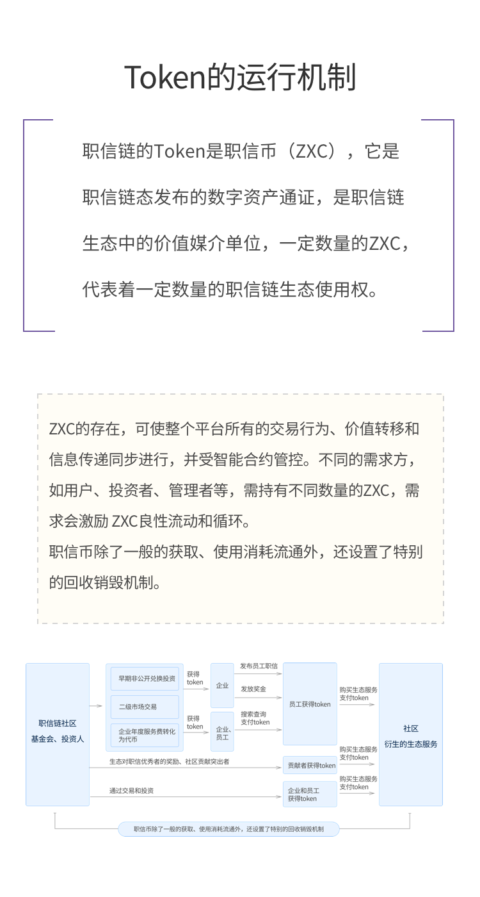
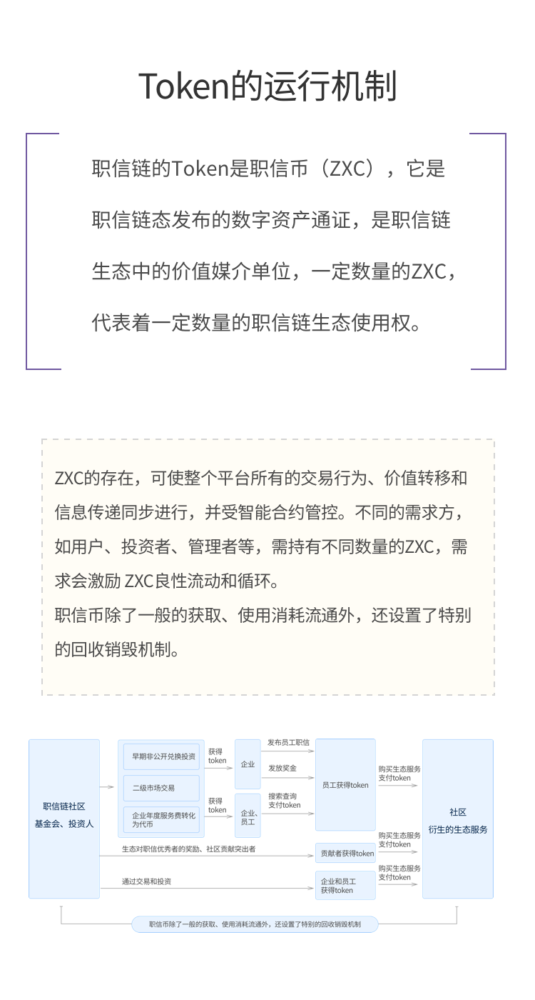

职信币的使用场景
1. 平台代币总量的30%主要是用来自动奖励职信评分优秀者的，企业可以单独购买职信币作为福利额外奖励给自己的职信优秀员工；
2. 月度职信评分优秀者通过智能合约自动获得来自平台和来自企业的对优秀者的职信币奖励；
3. 员工和企业主会进一步通过投资持有更多职信币实现资产的保值升值
4. 基于职信币的增值和税收优势，企业对员工的奖金等会采用职信币进行发放。其中税收优势是基于当前多数政府视代币为商品而非货币。随着各国政策的不断调整，该项优势也会逐步调整；
5. 生态对职信优秀者的奖励、社区贡献突出者的奖励用职信币进行奖励等；
6. 生态中各类数据查询、调用、获取的场景中都可以通过职信币完成支付交易；
7. 大多数对于生态成员的衍生服务，例如招聘求职、猎头、背景调查、信贷服务、保险服务、健康服务、培训服务、电商服务、社交服务，等等的获取也可以通过职信币支付交易；
8. 平台个人代币发行服务开通后，数量众多的个人代币的初始募集锚定代币也是职信币，会产生大量的职信币需求，类似以太坊ERC20协议代币发行时对以太币的需求。
企业和平台将Token应用到优秀员工的代币奖励场景，承载、彰显，也借力了人类社会最深层次、最具普遍性的共识力之一：好人好报因果律；职信链呈现的这种天然的社会共识力，将极大提高职信链、职信币的参与人的广度、深度、热度和持久度。
职信微币（GAS）代表着职信链的更小的价值媒介代币单位，职信链上的应用操作，需要消耗一定的职信微币（GAS），例如查询一次职信数据等需要消耗职信链资源的操作，当然，在很多场景中社群用户也可以获得GAS的收益，例如：数据拥有着，资源输入者，或者职信高分者。
职信微币（GAS）本质上是职信币（ZXC）的一个小单位计量方式。
1职信币=1x108职信微币
职信币的获取场景
1. 企业用户可获得一定的早期非公开兑换投资额度，以较低价格获得一定的代币，用于对自己职信优秀员工的月度奖励；
2. 企业通过二级市场购入代币，或者将企业年度服务费转化为代币模式获得代币，或以社区建设突出贡献者模式获得代币，代币用于对自己优秀员工的奖励、奖金福利；
3. 其他合格投资人可以通过早期非公开兑换投资获得；
4. 其他投资人可通过二级市场交易获得；
5. 职信评分优秀个人可通过智能合约模式自动获得来自平台和企业的代币奖励；
6. 企业将福利奖金等通过职信币方式发放员工，员工获得代币；
7. 任何用户可通过交易自己的信息数据或职信数字资产获得代币；
8. 通过基于职信链生态提供各种应用开发、应用提供等获得：如招聘求职、猎头、背景调查、信贷服务、保险服务、健康服务、培训服务、电商服务、社交服务等。
9. 个人代币发行服务开通后，数量众多的个人代币的初始募集锚定代币也是职信币，类似以太坊ERC20协议代币发行时对以太币的募集所得。
ZXC总量是恒定的，不增发，不回收销毁。随着使用场景、使用人数和使用数量的快速持续增加，它的价值会呈现快速持续增长。
职信币的销毁机制
交易手续费的80%奖励给记账节点，平台每年将交易手续费的20%ZXC作为回收部分并永久销毁，直至流通总量降低为25亿枚。
随着生态的发展，平台还会获得如认证授权收益等增值服务收益，该收益的80%分配给相关服务方，20%每年也作为回收部分永久销毁，直至流通总量降低为25亿。
ZXC初始总量是恒定的，不增发；并在随后的流通过程中通过销毁机制体现ZXC的通缩性质。随着使用场景、使用人数和使用数量的快速持续增加，它的价值会呈现自然、快速持续增长。

官方微信